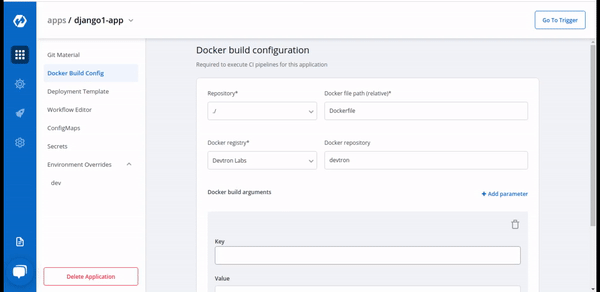

Docker Build Configuration
In the previous step, we discussed git configurations. In this section, we will provide information on the docker build config.
Docker build configuration is used to create and push docker images in the docker registry for your application. You will provide docker related information to build and push docker images in this step.
Only one docker image can be created even for multi-git repository application as explained in the previous step.

Here you can see, 5 options are present to configure your docker build.
-
Repository
-
Docker file path
-
Docker Registry
-
Docker Repository
-
Docker build arguments
-
Key
-
Value
-
| Options | Description |
|---|---|
Repository |
Provide the checkout path of the repository in this column, which you had defined earlier in git configuration details |
Docker File Path |
Provide a relative path for your docker file. Dockerfile should be present on this path. |
|Docker Registry|Select the docker registry you wish to use, which will be used to store docker images.|
|Docker Repository|Name of your docker repository that will store a collection of related images. Every image is stored with a new tag version.|
|Key-value|The key parameter and the value for a given key for your docker build. This is Optional. (this can be overridden at CI step later)|
1. Repository
Provide the checkout path of the repository in this column, which you defined earlier in git configuration details. In the case of multi-git, select the checkout path configured for the repository containing Dockerfile to be used for image creation.
2. Docker file path
Inside the Docker file path option, provide a relative path for your docker file. The default docker file name is Dockerfile but if you are using a custom name for your Dockerfile like xyz_dockerfile, then you have to provide that custom name.
If your docker file is not at the root of the repository, then it should contain a relative path to this file. The path will be searched inside the checkout path selected in the previous step.
3. Docker Registry
Select the docker registry you want to use to store docker images. You can have ECR (Elastic Container Registry), DockerHub, etc, and many other registries as your docker registry.
Adding a registry in the drop-down is configurable. To get a drop-down of these registries into the docker registry option, you have to add the configuration and credentials in the Global Configuration.
4. Docker Repository
You have to provide the docker Registry(ECR) bucket name under the Docker Repository option, but this is optional. If you provide the name of your repository we will use that name but if you don’t provide a name then the docker repository is automatically created and used.
5. Docker build arguments
Many times you use some arguments when you build your Dockerfile. Here you can provide those arguments in key-value format. You can provide one or more arguments and these arguments are optional. Read about the docker command line and arguments.
Once all the configuration is done, click on Save Configuration to save the Docker Build Configuration.